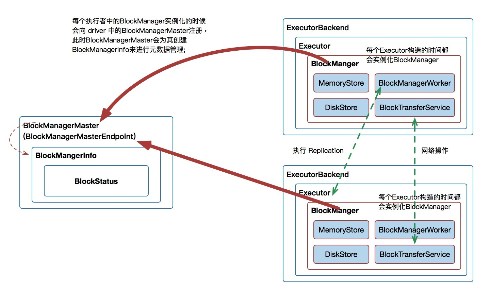
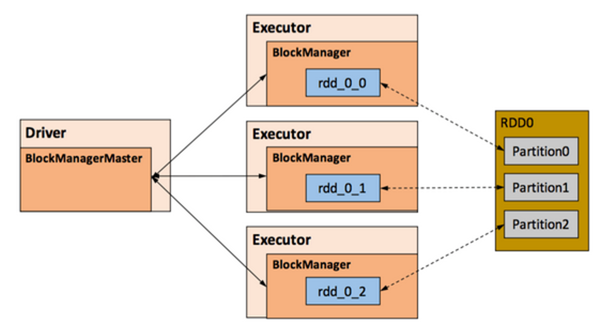

Ch09-Spark 之 BlockMananger
June 15, 2019
Spark 的一个重要特性是能够把计算结果数据保存到内存或磁盘中，供后面的操作读取，这就是 RDD 的缓存，这个过程也可称为 persist 或 caching（Spark 提供了 persist() 和 cache() 函数来缓存 RDD）。
1. 原理介绍 #
1.1 基本架构 #
BlockManager，运行在每个节点（driver 和 executors）上，提供接口用于读写本地和远程各种存储设备 (内存、磁盘和 off-heap)，是 Spark 存储体系中的核心组件。 Driver 端的 BlockManagerMaster 和 Executor 端的 BlockManager 组成了 Master-Slave 架构，其中 BlockManagerMaster 负责整个 Spark 应用程序的 Block 的元数据信息的管理和维护，而 BlockManager 负责将 Block 的更新等状态上报到 BlockManagerMaster 以及 接收 BlockManagerMaster 的命令。

| 组件 | 说明 |
|---|---|
| MemoryStore | 负责对内存中的数据进行操作 |
| DiskStore | 负责对磁盘上的数据进行处理 |
| BlockTransferService | 负责对远程节点上的数据进行读写操作。当执行 ShuffleRead 时，如数据在远程节点，则会通过该服务拉取所需数据。 |
| ConnectionManager | 创建当前节点 BlockManager 到远程其他节点的网络连接 |
1.2 工作流程 #
- 当 BlockManager 创建之后，首先向 Driver 所在的 BlockManagerMaster 注册，此时 BlockManagerMaster 会为该 BlockManager 创建对应的 BlockManagerInfo。BlockManagerInfo 管理集群中每个 Executor 中的 BlockManager 元数据信息，并存储到 BlockStatus 对象中。
- 当使用 BlockManager 执行写操作时，例如持久化 RDD 计算过程中的中间数据，此时会优先将数据写入内存中，如果内存不足且支持磁盘存储则会将数据写入磁盘。如果指定 Replica 主备模式，则会将数据通过 BlockTransferService 同步到其他节点。
- 当使用 BlockManager 执行了数据变更操作，则需要将 BlockStatus 信息同步到 BlockManagerMaster 节点上，并在对应的 BlockManagerInfo 更新 BlockStatus 对象，实现全局元数据的维护。
1.3 空间申请策略 #
因为不能保证存储空间可以一次容纳 Iterator 中的所有数据，当前的计算任务在 Unroll 时要向 MemoryManager 申请足够的 Unroll 空间来临时占位，空间不足则 Unroll 失败。如果最终 Unroll 成功，当前 Partition 所占用的 Unroll 空间被转换为正常的缓存 RDD 的存储空间。
Unroll 概念
RDD 在缓存到内存之前，partition 中 record 对象实例在堆内 other 内存区域中的不连续空间中存储。RDD 的缓存过程中，不连续存储空间内的 partition 被转换为连续存储空间的 Block 对象，并在 Storage 内存区域存储，此过程被称作为 Unroll(展开)。
- 对于非序列化的 Partition 则要在遍历 Record 的过程中依次申请，即每读取一条 Record，采样估算其所需的 Unroll 空间并进行申请，空间不足时可以中断，释放已占用的 Unroll 空间。
- 对于序列化的 Partition，其所需的 Unroll 空间可以直接累加计算，一次申请。
Block 有序列化和非序列化两种存储格式，具体以哪种方式取决于该 RDD 的存储级别。
- 非序列化的 Block 以一种 DeserializedMemoryEntry 的数据结构定义，用 ArrayList 进行管理；
- 序列化的 Block 则以 SerializedMemoryEntry 的数据结构定义，用字节缓冲区（ByteBuffer）来存储二进制数据，这些数据使用 LinkedHashMap 进行管理。
1.4 空间淘汰策略 #
由于同一个 Executor 的所有的计算任务共享有限的存储内存空间，当有新的 Block 需要缓存但是剩余空间不足且无法动态占用时，就要对 LinkedHashMap 中的旧 Block 进行淘汰（Eviction），而被淘汰的 Block 如果其存储级别中同时包含存储到磁盘的要求，则要对其进行落盘（Drop），否则直接删除该 Block。其淘汰规则为：
- 被淘汰的旧 Block 要与新 Block 的 MemoryMode 相同，即同属于堆外或堆内内存；
- 新旧 Block 不能属于同一个 RDD，避免循环淘汰；
- 旧 Block 所属 RDD 不能处于被读状态，避免引发一致性问题；
- 遍历 LinkedHashMap 中的 Block，按照最近最少使用（LRU）的顺序淘汰，直到满足新 Block 所需的空间。
2. BlockManager 与 RDD 之间的关系 #
RDD 的每个 Partition 经过处理后唯一对应一个 Block（BlockId 的格式为 rdd_RDD-ID_PARTITION-ID）。
